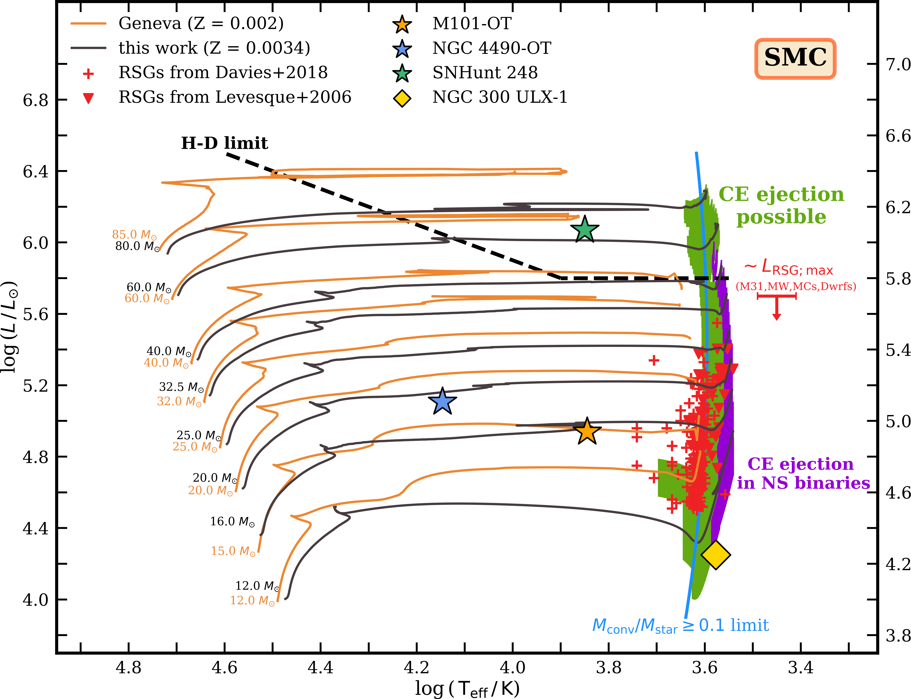
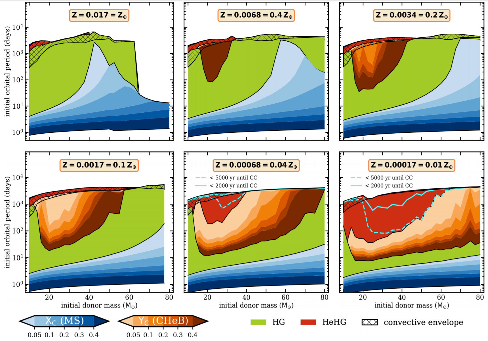
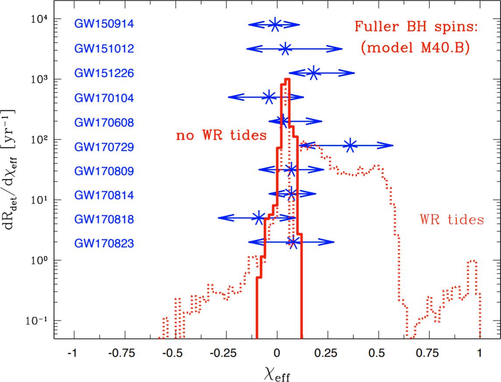
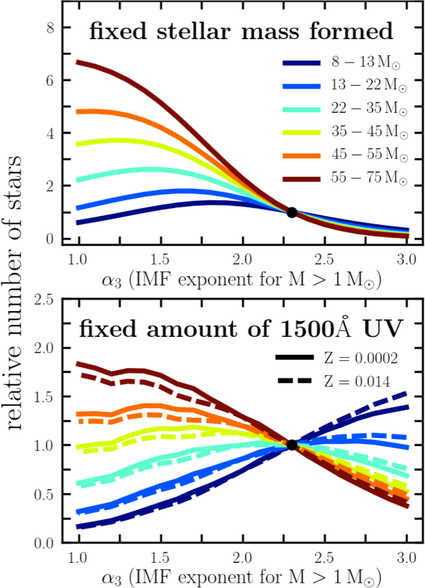
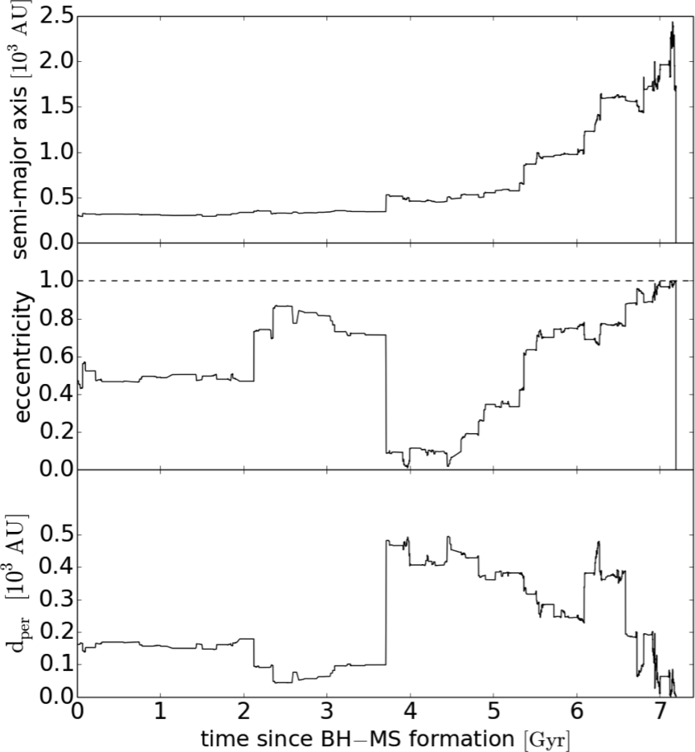

Massive stars shake and stir the Universe. Even though they are relatively few in numbers, with their high luminosities, strong stellar winds, and violent deaths massive stars regulate chemical evolution and star formation throughout the Cosmic Ages. Low-metallicity massive stars helped re-ionize the Universe after the Big Bang and their explosions as (super)luminous supernovae and gamma-ray bursts shine towards us from the dawn of galaxies.
Massive stars do not live alone. Most of them are formed in pairs: close binary systems in which they are destined to interact with their companions by transferring mass and angular momentum. Through mass transfer, binaries enrich the interstellar medium with processed material, shine as X-ray binaries, and bring two black holes or neutron stars close together, driving them to merge and blaze in gravitational waves in the most energetic spectacles observed to date.
I study the evolution of massive stars under the influence of binary interactions. I am particularly interested in the formation of gravitational-wave sources observed by the LIGO/Virgo ([1], [2]), in mass transfer and common-envelope evolution of massive binaries ([3], [4], with links to ultra-luminous X-ray sources [5]), in the role played by metallicity (which as we showed in [6], [4] goes well beyond the effect on stellar winds), and in the origin of black-hole low-mass X-ray binaries ([7]). Recently, I am also very enthusiastic about post-interactions binaries (such as the LB-1 system), their observational signatures, and detection strategies.
My work is theoretical in nature but heavily driven by various types of observations:
I combine the strengths of two types of codes:
See bellow for brief summaries of selected papers that I led or was heavily involved in.
We model internal structures and envelope binding energies of massive donors in common-envelope (CE) events with black-hole or neutron-star accretors. Even with the inclusion of various debatable energy sources, it turns out that a successful CE ejection is only feasible when the donor has a deep outer convective envelope, i.e. is a cool (red) supergiant.

Common-envelope (CE) evolution in isolated binary systems is thought to be one of the leading channels for producing double compact object systems (binaries of black holes, BH, or neutron stars, NS) that eventually merge and can be detected in gravitational waves. The CE phase itself, during which a BH or a NS spirals in inside a supergiant's envelope, is one of the most uncertain stages of the channel. In this paper we ask a question which BH binaries with supergiant companions will evolve through and can potentially survive the CE phase.
In pursue of the most optimistic case, we make a number of physically extreme assumptions in favor of easier CE ejection. We find that even then a successful CE evolution in BH binaries is only possible if the stellar companion is a convective-envelope star: a red supergiant (RSG) as shown in the HR diagram below.
Interestingly, no RSGs are observed above luminosities of about log(L/L⊙) ≈ 5.6−5.8, corresponding to stars with initial above 40 solar masses. Either such RSGs elude detection due to short lifetimes, or they do not exist (for instance due to strong winds), implying an upper limit on the masses of binary BH mergers from CE evolution at about 50 M⊙.

Using detailed MESA stellar models and observational constraints from supergiants in the Local Group, we show that metallicity significantly affects the basic properties of donor stars (evolutionary stage, envelope structure) in massive interacting binaries. The parameter space for mass transfer from core-helium burning supergiants increases dramatically at low Z. We discuss implications for binary evolution scenarios.
Metallicity is known to significantly affect the radial expansion of a massive star: the lower the metallicity the more compact the star, especially during its post-main sequence evolution. The way a star expands in size is especially important when it is a member of a binary system (and most massive stars are born in binaries!) because it determines the point at which it will overflow its Roche lobe and start transferring mass to the companion. In this paper we quantify this effect, using populations of supergiants in the Milky Way and in the Small Magellanic Cloud as observational checks.
The above figure shows at what evolutionary stage is a massive donor in a binary at a point when it initiates a Rocho-lobe overflow, with each panel showing a different metallicity. At solar metallicity a case-B mass transfer is almost always initiated shortly after the end of MS. However, at lower metallicity the parameter space for mass transfer from a more evolved, slowly-expanding core-helium burning star increases dramatically. This means that envelope stripping and formation of helium stars in low metallicity environments happens later during the evolution of the donor, implying a shorter duration of the WR phase (even by an order of magnitude) and higher final core masses.
We study the origin of compact binary mergers detected by the LIGO/Virgo as remnants from isolated evolution of massive star binaries. We combine rapid binary evolution code (StarTrack) with inputs from rotating stellar models (MESA, Geneva) to model the natal and final BH spins. We show that small effective binary BH spins measured by LIGO/Virgo yield support to efficient angular momentum transport in stellar interiors.


We created the first population model of binary BH and NS mergers from isolated binary evolution that accounts for the observed inter-correlations between binary parameters at birth (e.g. orbital period, mass, eccentricity). We showed that binary BHs, unlike double NSs, preferentially form from metal-poor stars, which signals the significance of metallicity in our understanding of gravitational-wave (GW) sources. Our model was the first to explore initial mass function (IMF) variations consistently with re-normalization of the cosmic star formation rate (using Starburst99). Through that, we demonstrated that even extreme variations or uncertainties in the IMF slope for massive stars do not significantly affect the GW source population (see figure on the left).
Here, we tackled a poorly studied topic of binary evolution coupled with stellar system dynamics. In a novel approach, we model classical binary evolution simultaneously with dynamical encounters with random fly-bys in the Milky Way disk. We show that repeated encounters can play a decisive role in the evolution of ultra-wide binaries (> 500 AU) even in the Galactic field, possibly leading to the formation of some of the puzzling black-hole low-mass X-ray binary systems.
